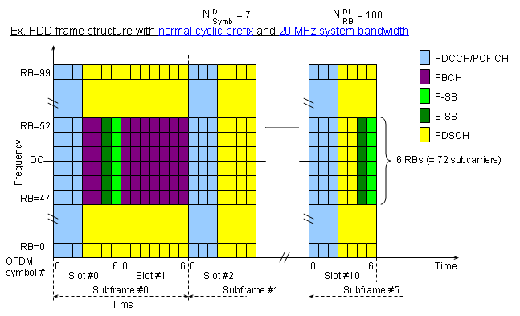

Frame Structure - Downlink Home : www.sharetechnote.com
One good way to study this kind of thing and get some practical understanding would be to start from the view from the highest level and get deeper into it step by step.
Overview - FDD
The highest level view from 36.211 for FDD LTE is as follows. It only shows the structure of one frame in time domain. It does not show any structure in frequency domain.
Some of high level description you can get from this figure would be
i) Time duration for one frame (One radio frame, One system frame) is 10 ms. This means that we have 100 radio frame per second.
ii) the number of samples in one frame (10 ms) is 307200 (307.200 K) samples. This means that the number of samples per second is 307200 x 100 = 30.72 M samples.
iii) Number of subframe in one frame is 10.
iv) Number of slots in one subframe is 2. This means that we have 20 slots within one frame.
So one slot is the smallest structure in time domain ? No, if you magnify this frame structure one step further, you would get the following figure.
Now you see that one slot is made up of 7 small blocks called 'symbol'. (One symbol is a certain time span of signal that carry one spot in the I/Q constellation.).
And you see even smaller structures within a symbol. At the beginning of symbol you see a very small span called 'Cyclic Prefix' and the remaining part is the real symbol data.
There are two different type of Cyclic Prefix. One is normal Cyclic Prefix and the other is 'Extended Cyclic Prefix' which is longer than the Normal Cyclic Prefix. (Since the length of one slot is fixed and cannot be changed, if we use 'Extended Cyclic Prefix', the number of symbols that can be accomodated within a slot should be decreased. So we can have only 6 symbols if we use 'Extended Cyclic Prefix').
Now let's magnify the structure even further, but this time expand in frequency domain, not in time domain. You will get the following full detail diagram.

The first thing you have to be very familiar with as an engineer working on LTE is the following channel map shown above.
We can represent an LTE signal in a two dimensional map as shown above. The horizontal axis is time domain and the vertical axis is frequency domain. The minimum unit on vertical axis is a sub carrier and the minimum unit on horizontal axis is symbol. For both time domain and frequency domain, there are multiple hiarachies of the units, meaning a multiple combination of a smaller unit become a larger units.
Let's look at the frequency domain structure first.
LTE (any OFDM/OFDMA) band is made up of multiple small spaced channels and we call each of these small channels as "Sub Carrier".
Space between the chhanel and the next channel is always same regardless of the system bandwidth of the LTE band.
So if the system bandwidth of LTE channel changes, number of the channels (sub carriers) changes but the space between channels does not change.
Q> What is the space between a subcarrier and the next sub carrier ? A> 15 Khz
Q> What is the number of channels(sub carriers) for 20 Mhz LTE band ? A> 1200 sub carriers.
Q> What is the number of channels(sub carriers) for 10 Mhz LTE band ? A> 600 sub carriers.
Q> What is the number of channels(sub carriers) for 5 Mhz LTE band ? A> 300 sub carriers.
Got any feelings about sub carriers and it's relation to system bandwidth ?
Now let's look at the basic units of horizontal axis which is time domain. The minimum unit of the time domain is a Symbol, which amounts to 66.7 us. Regardless of bandwidth, the symbol length does not changes.In case of time domain, we have a couple of other structures as well. The largest unit in time domain is a frame, each of which is 10 ms in length. Each of the frame consists of 10 sub frames, each of which is 1 ms in length. Each of sub frame consists of 2 slots, each of which is 0.5 ms in length.Each of slots consists of 7 symbols, each of which is 66.7 us.
With this in mind, let's think about the scale in reverse direction.
Q> How many symbols are there in a slot ? A> 7 symbols.
Q> How many symbols in a sub frame ? A> 14 symbols.
Q> How many slots are there in a frame ? A> 20 slots.
Now let's look at the units which is made up of both time domain (horizontal axis) and frequency domain (vertical axis). Let's call this type of unit a two-dimensional unit.
The minimum two dimensional unit is resource element which is made up of one symbol in time domain and one sub carrier in frequency domain. Another two dimensional unit is resource block(RB) which is made up of one slot in time domain and 12 sub-carrier in frequency domain. Resource Block(RB) is the most important units in LTE both for protocol side and RF measurement side.
Now here goes questions.
Q> How many symbols in a resource block ? A> 7 symbols.
Q> How many sub-carriers in a resource block ? A> 12 sub-carriers.
Q> How many resource elements in a resource block ? A> 84 resource elements.
Now it's time to combine all the units we covered. The following questions are very important to read any of the LTE specification.
Q> How many resource blocks in a 20 Mhz band ? A> 100 resource blocks.
Q> How many resource blocks in a 10 Mhz band ? A> 50 resource blocks.
Q> How many resource blocks in a 5 Mhz band ? A> 25 resource blocks.
I have seen this type of mapping so many times from so many different sources, but do I really understand all the details of the map ? No not yet. It will take several years to understand every aspects of the map.
Probably what I do as the first step is to describe each part of the map in a verbal form
PBCH(Physical Broadcast Channel)
- It carries only the MIB.
- It is using QPSK.
- Mapped to 6 Resource Blocks (72 subcarriers), centered around DC subcarrier in sub frame 0.
- Mapped to Resource Elements which is not reserved for transmission of reference signals, PDCCH or PCHICH
The first L(1 or 2 or 3) Symbols
This is one of the most confusing area of the map because multiple channels are located in this area. On the first symbol is PCFICH but PCFICH takes only part of the resource blocks on the first symbol not all. PHICH is carried by this area as well. And the remaining space not occupied by PCFICH and PHICH is allocated for PDCCH.
PCFICH(Physical Control Format Indicator Channel)
- It carries the size of PDCCH
- Mapped to the first OFDM symbol in each of the downlink sub-frameThis contains the information on number of OFDM symbols for PDCCH and PHICH symbol duration received from the PBCHUE decode this channel to figure out how many OFDM symbols are assigned for PDCCH
- It is 16 data subcarriers of the first OFDM symbol of the subframe.
- PCFICH data is carried by 4 REGs and these four REGs are evenly distributed across the whole band regardless of the bandwidth.
- The exact position of PCFICH is determined by cell ID and bandwidth.
PDCCH(Physical Downlink Control Channel)
- Mapped to the first L OFDM symbols in each of the downlink sub-frame.
- Number of the symbols (L) for PDCCH can be 1,2, or 3.
- Number of the symbols for PDCCH is specified by PCFICH
- PDCCH carries DCIs and the DCI carries Transport format, resource allocation, H-ARQ information related to DL-SCH, UL-SCH and PCH.
- PDCCH also carries DCI 0 which is for UL Scheduling assignment (e.g, UL Grants).
- Multiple PDCCH are supported and a UE monitors a set of control channels.
- Modulation Scheme is QPSK.
- PDCCH is like HS-SCCH for HSDPA and PDCCH for R99, E-AGCH/E-RGCH for HSUPA
- Even though PDCCH has a lot of functions, not all of them are used at the same time so PDCCH configuration should be done flexibly.
- If you are interested in the detailed information mapping in this channel, refer to 6.8.1 of 36.211. Following is the initial descrition on this section.
The physical downlink control channel carries scheduling assignments and other control information. A physical controlchannel is transmitted on an aggregation of one or several consecutive control channel elements (CCEs), where acontrol channel element corresponds to 9 resource element groups. The number of resource-element groups notassigned to PCFICH or PHICH is REG N . The CCEs available in the system are numbered from 0 and N_CCE-1 , where N_CCE = floor(N_REG/9) . The PDCCH supports multiple formats as listed in Table 6.8.1-1. A PDCCH consisting of nconsecutive CCEs may only start on a CCE fulfilling imod n = 0 , where i is the CCE number.
- Carries H-ARQ Feedback
- After UE trasmitted the data in UL, it is waiting for PHICH for the ACK.
- It is like E-HICH in HSPA
- Sometimes several PHICH constitutes a PHICH group using the same resource elements.
PDSCH(Physical Downlink Shared Channel)
- Carries user specific data (DL Payload).
- Carries Random Access Response Message.
- It is using AMC with QPSK, 16 QAM and 64 QAM
- It carries the random access preamble
- It is occupying 72 subcarriers of bandwidth in the frequency domain. If the random access preamble is successfuly received, the random access message is transmitted on the UL-SCH.
- Within this channel is Random Access Preamble. This Random Access Preamble is generated with Zadoff-Chu sequence.
P-SS(Primary Synchronization Signal)
- Mapped to 72 active sub carriers(6 resource blocks), centered around the DC subcarrier in slot 0 and slot 10.
Not a big issues until now. But when you have the following data and information, can you locate exactly which part of the channel map would carry this message ? This is one of the very tricky part of understanding LTE protocol and it would take a long time for study. (If you are an RF engineer, this may not be so important to you).
Most of the channels (e.g, DPSCH, DPCCH, PBCH etc) is for carrying a special information (a sequence of bits) and they have some higher layer channel connected to them, but Reference Signal is a special signal that exists only at PHY layer. This is not for delivering any specific information. The purpose of this Reference Signal is to deliver the reference point for the downlink power.
When UE try to figure out DL power (i.e, the power of the signal from a eNode B), it measure the power of this reference signal and take it as downlink cell power.
These reference signal are carried by multiples of specific Resource Elements in each slots and the location of the resource elements are specifically determined by antenna configuration.
In the figures below, Red/Blue/Green/Yellow is the part where the reference signal are carried and the resource elements marked in gray are the ones reserved for reference signal, but are not carrying Reference Signal for that specific antenna.
There are two different types of reference signal : Cell Specific Reference Signa and UE specific Reference Signal
- Cell Specific Reference Signal : This reference signal is being transmitted at every subframe and it spans all across the operating bandwidht. It is being transmitted by Antenna port 0,1,2,3.
- UE Specific Reference Signal : This reference signal is being transmitted within the resource blocks allocated only to a specific UE and is being transmitted by Antenna port 5.
Is the Resource element for the cell specific reference signal fixed ?
No, the location changes according to Physical Cell ID as described below.
- The time domain index (l) for the reference signal = fixed. ( l = [0,4] )
- The frequency domain index k for the reference signal = changes according to physical cell ID as specified in 36.211 6.10.1.2 Mapping to resource element.
- main rule is : k = 6 m + (v + v_shift) mod 6, where v_shift = Physical Cell ID mod 6. For further details, refer to 36.211 6.10.1.2
What kind of value is carried by the downlink reference signal ?
The value is a pseudo random sequence generated by the algorithm defined in 36.211 6.10.1.1 Sequence Generation.(Note : The uplink reference signal - DMRS - is Zadoff Chu sequence)
One of the determining value of this sequence is Physical Cell ID, meaning that the physical cell ID influences the value of the reference signal as well.
Following is a snapshot showing the whole channels described above. Of course this is not to give you the detailed information. It is to give you a overall picture of a whole frame. Would you be able to identify the locations of each channels described above ? Just try it, it will be a good practice.
Each components in this grid has it's own role and used in various different context. If you are interested in how each of these channels are used in real communication process, refer to following sections in Quick Reference page.
- Cell ID Detection and System Information Detection
- Uplink Data Transmission Scheduling - Persistent Scheduling
- Uplink Data Transmission Scheduling - Non Persistent Scheduling
- Downlink Data transmission Process
- Channel Coding Processing for DL SCH/PCH/MCH
- Physical Channel Processing

Physical Channels in Communication
Following diagram shows overall sequence of Uplink/Downlink data transmission. You would be able to associate the data transmission sequence diagram and the specific location of each channels in DL/UL frame structure.
I would not put much of the comments for the following captures. These captures are for your practice to associate what you read in previous sections to the real life signal pattern.